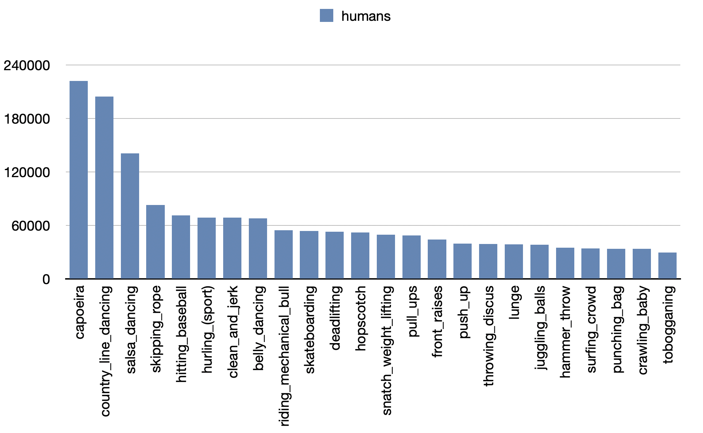
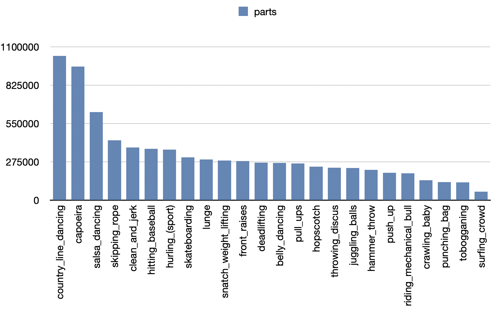
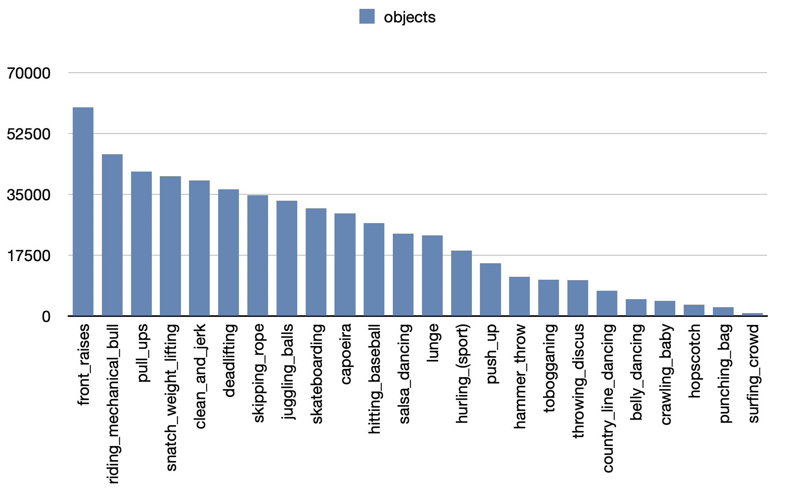
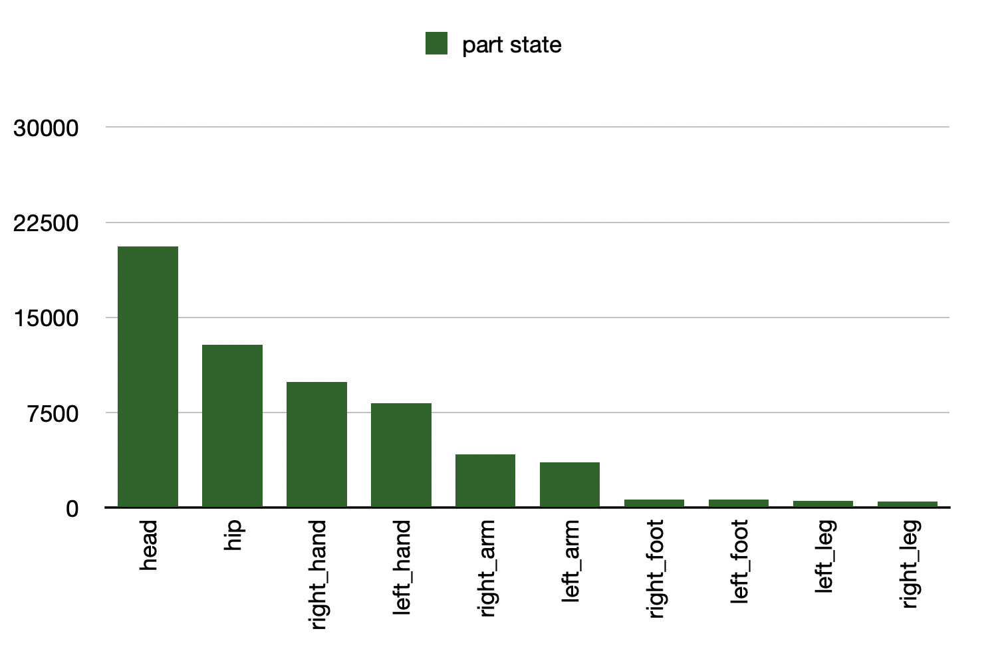
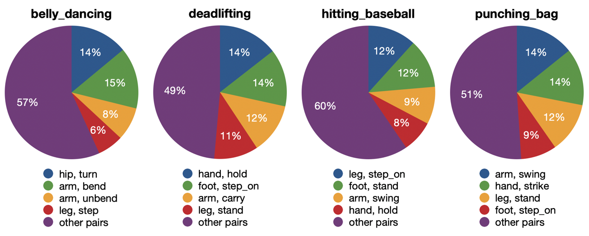
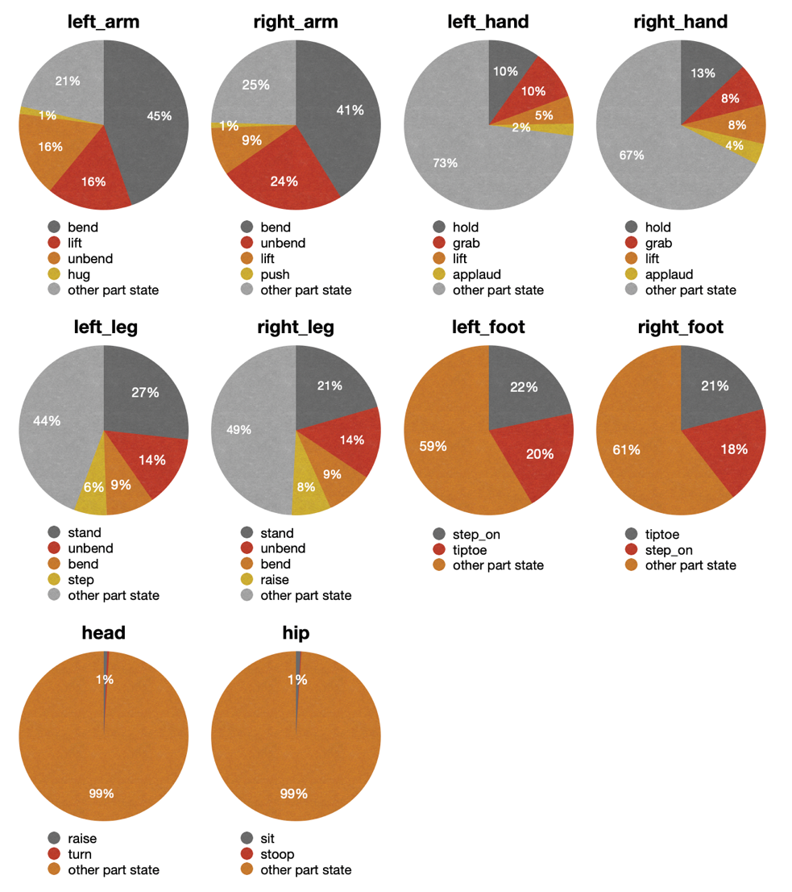
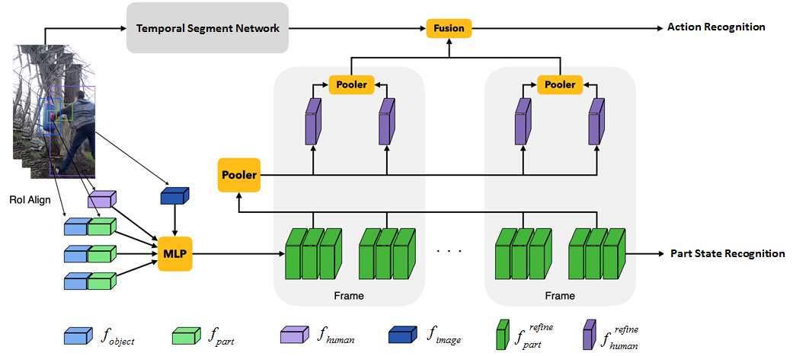
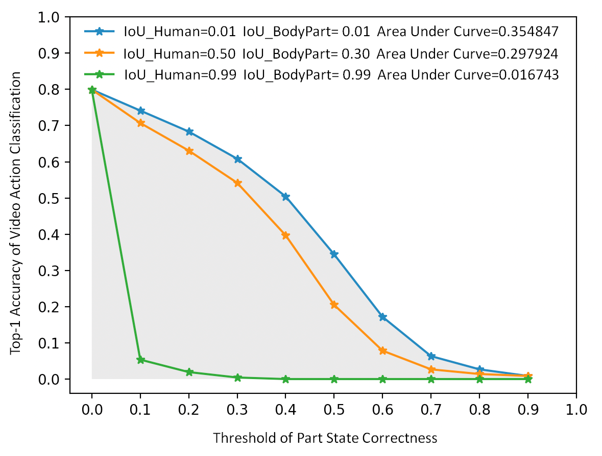

Kinetics-TPS Dataset
Kinetics-TPS Dataset: A Large-scale Video Dataset for
Part-level Action Parsing.
Xiao Ma Ding Xia Dongliang Wang Yali Wang Weihao Gan Jing Shao Wei Wu Junjie Yan Yu Qiao
MMLAB @ Shenzhen Institute of Advanced Technology

Abstract
Traditionally, action recognition has been treated as a high-level video classification problem. However, such manner ignores detailed and middle-level understanding about human actions. To fill this gap, we deeply investigate action recognition in videos, by explicitly encoding human actions as spatio-temporal composition of body parts. Specifically, we develop a large-scale Kinetics-Temporal Part State (Kinetics-TPS) benchmark for this study. Different from existing video action datasets, our Kinetics-TPS provides 7.9M annotations of 10 body parts, 7.9M part state (i.e., how a body part moves) and 0.5M interactive objects in the video frames of 24 human action classes, which bring new opportunity to understand human action by compositional learning of body parts.
Dataset Statitics
Our Kinetics-TPS contains 4741 videos with 1） bounding boxes of human instances: 1.6 M 2） bounding boxes of body parts: 7.9M (at most 10 body parts of a person). 3）part state tags of each annotated part: 7.9M (74 classes of part state) 4) bounding boxes and tags of objects: 0.5 M (75 classes of object). We briefly summarize data statistics for reference.
- Number of 'humans' instances per category of Kinetics-TPS. 
- Number of 'parts' instances per category of Kinetics-TPS. 
- Number of 'objects' instances per category of Kinetics-TPS. 
- Number of 'part state' instances per body part of Kinetics-TPS. 
- 'body part，part state' pairs of four exemplar classes in Kinetics-TPS. 
- Top-5 'part state' tags of each body part in Kinetics-TPS. 
Baseline & Experiment Results
We provide a simple baseline for this task. First, we use ResNet50 and RoiAlign to extract part, human, object features, by using ground truth bounding boxes. Second, we concatenate these features and feed them into a MLP network to extract the refined feature of each body part. The refined part feature is used for part state recognition. Third, we perform average pooling on all refined part features of each human as the refined human feature. Then we perform average pooling on all refined human features in each sampled frame to obtain the frame-level human feature. Fourth, we perform TSN to extract visual feature of the corresponding frame. Then we concatenate the frame-level human feature and TSN feature together, and feed this feature into a MLP layer to get action score of this frame. Finally, we average action scores over frames as video-level action prediction for training. Additionally, since ground truth annotations are not available in the testing stage. Hence, we use the detected boxes of human instances and body parts for inference.
 Given IoU between the predicted and ground truth boxes (Default: IoU_Human=0.5, IoU_BodyPart=0.3), we compute top-1 accuracy of video action classification conditioned on the threshold of part state correctness. Then, we compute the area under curve as our final evaluation metric. The detailed description of part state correctness and the evaluation metric can be found in the codalab. Download
Please refer to the competition page for more information.